To begin, we want to load (or download) the packages we will need for this exercise using library:
library(tidyverse)
# BiocManager::install("EBImage")
library(EBImage)
# install.packages("spatstat")
library("spatstat")This exercise asks us to analyze an image of a lymph node and evaluate the spatial dependence for all of the cell types in the lymph node. In this case, the null hypothesis is that each of the cell types are evenly distributed (via a homogenous Poisson process) throughout the lymph node. The cell types we will look at are T cells (T_cells), tumor cells (Tumor), dendritic cells (DCs), and other cells (other_cells).
The image data has already been processed from the original image of a stained lymph node slide to a data type known as marked point process. This example uses the following files from the Modern Statistics for Modern Biology’s data folder: “99_452SD-DCs.txt”, “99_452SD-other_cells.txt”, “99_452SD-T_cells.txt”, and "“99_452SD-Tumor.txt”.
Reading in the data
Taking a look at the first few rows
head(brcalymphnode)## # A tibble: 6 x 3
## x y class
## <dbl> <dbl> <fct>
## 1 6355 10382 T_cells
## 2 6356 10850 T_cells
## 3 6357 11070 T_cells
## 4 6357 11082 T_cells
## 5 6358 10600 T_cells
## 6 6361 10301 T_cellsHow many cells are in each cell type?
table(brcalymphnode$class)##
## DCs other_cells T_cells Tumor
## 878 77081 103681 27822Visualizing the data for each cell type using ggplot
ggplot(filter(brcalymphnode, class %in% cellclasses),
aes(x = x, y = y, col = class)) + geom_point(shape = ".") +
facet_wrap( . ~ class) + guides(col = FALSE)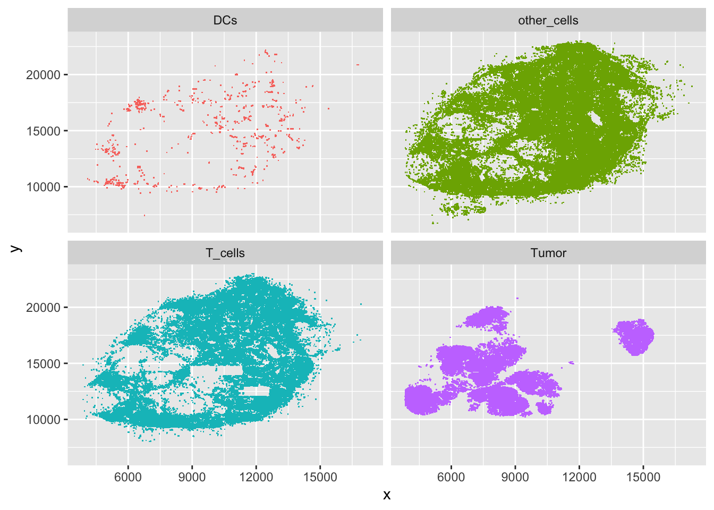
Now that we are familiar with what the data looks like, we will prepare it to be analyzed using the spatstat package, which allows us to put the data into a “ppp” object. The authors of the book describe the advantage of a “ppp” object by its ability to “capture realizations of a spatial point process,” which is convenient to work with when our data is formatted as individual points in the xy plane.
The first step in this process is to change the class of our dataframe into a “ppp” object, which is found in the spatstat package.
# put our current dataframe into a ppp object named ln
ln = with(brcalymphnode,
ppp(x = x, y = y, marks = class, xrange = range(x), yrange = range(y)))
# calling the object gives us summary statistics
ln## Marked planar point pattern: 209462 points
## Multitype, with levels = DCs, other_cells, T_cells, Tumor
## window: rectangle = [3839, 17276] x [6713, 23006] unitsWe can create a tighter region to be analyzed by creating a convex hull. This way we are analyzing the shape of the lymph node instead of a rectangle that would be inconsistent with the shape of the image we are interested in analyzing.
# the book uses the convhulln function to accomplish this, but you can also use the chull function in base R
# the convhulln function is found in the geometry package
library("geometry")
coords = cbind(ln$x, ln$y)
chull = convhulln(coords)
# ppp functions need the hull to be defined as closed polygons
# this is the code the book gives to accomplish this
pidx = integer(nrow(chull) + 1)
pidx[1:2] = chull[1, ]
chull[1, ] = NA
for(j in 3:length(pidx)) {
wh = which(chull == pidx[j-1], arr.ind = TRUE)
stopifnot(nrow(wh )== 1)
wh[, "col"] = 3 - wh[, "col"] ## 2->1, 1->2
pidx[j] = chull[wh]
chull[wh[, "row"], ] = NA
}
pidx = rev(pidx)We can visualize the hull by graphing it.
# the book gives the following code
ggplot(tibble(x = ln$x, y = ln$y)[pidx, ], aes(x = x, y = y)) +
geom_point() + geom_path() + coord_fixed()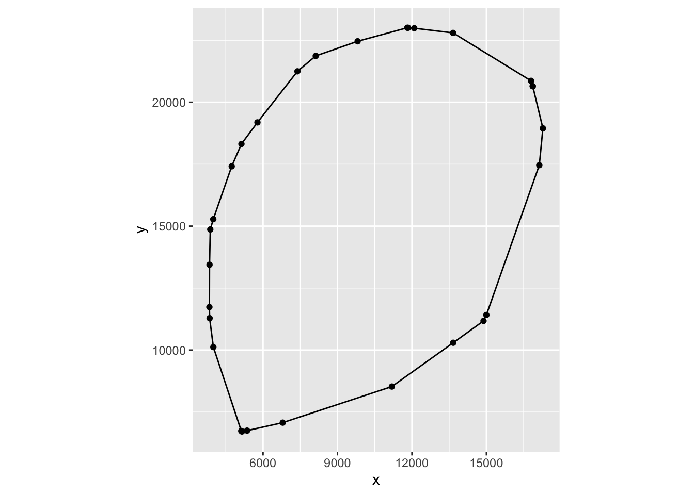
If you compare the shape of the hull to Figure 11.22 in the book, this looks like a better representation of the shape we actually want to analyze.
Now that we have defined the hull as a closed polygon, we can convert our data into a “ppp” object class.
# take brcalymphnode and use its data within the region of the hull and store it in ln
ln = with(brcalymphnode,
ppp(x = x, y = y, marks = class, poly = coords[ pidx, ],
check = FALSE))
# calling the object gives a basic summary
ln ## Marked planar point pattern: 209462 points
## Multitype, with levels = DCs, other_cells, T_cells, Tumor
## window: polygonal boundary
## enclosing rectangle: [3839, 17276] x [6713, 23006] units# to visualize our object, we can plot it
plot(ln, col = 1:4, pch = 19, cex = 0.1)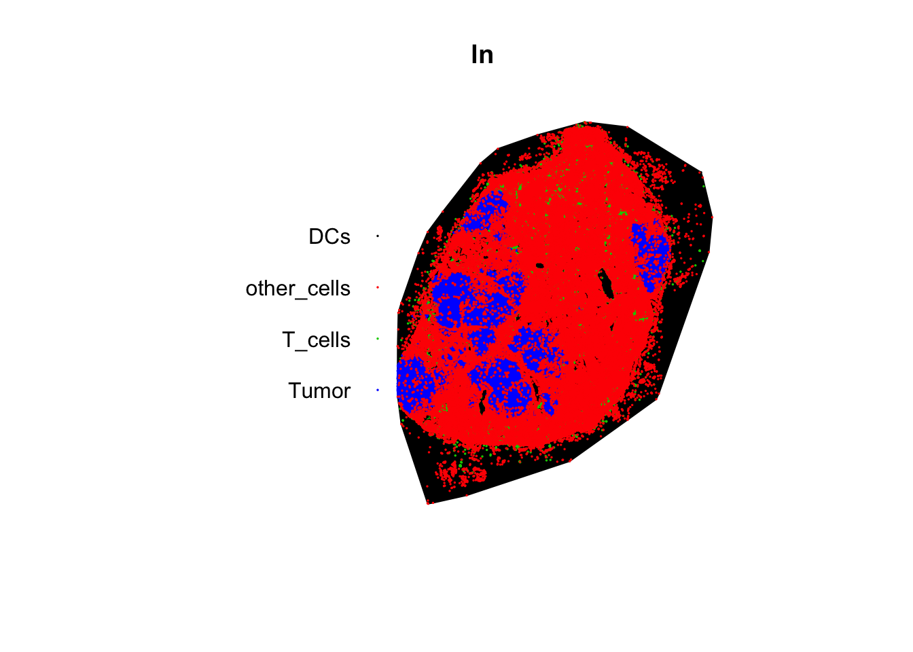
Now that we have the data in a “ppp” object, we can start to test our null hypothesis that all of the cell types are evenly distributed throughout the lymph node (via a homogenous Poisson process). This will basically allow us to see if there is a spatial dependence in the location of the different cell types. Rejecting our null hypothesis would mean that the cells are spatially dependent on the location of other cells of their type.
If we want to see if a Poisson distribution is a relatively decent assumption with our data, we can use the Gest function in the spatstat package to look at this. Basically this estimates cumulative distribution function of the distance of a random point to its nearest neighbor. The plot will automatically include the CDF for a homogenous Poisson distribution.
plot(Gest(ln))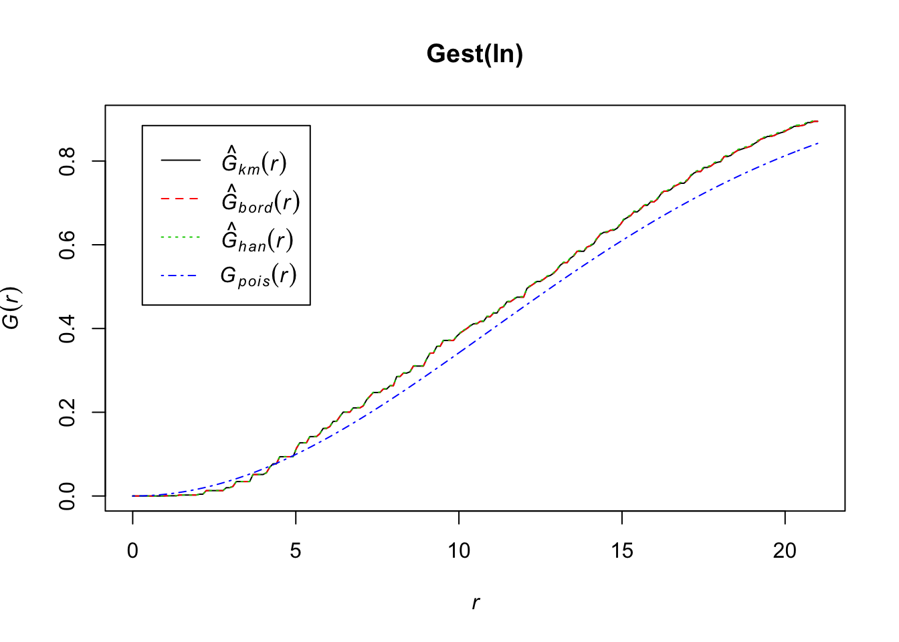
While it looks like our data may differ from a homogenous Poisson CDF, the general shape of our data seems to support this distribution is a fairly reasonable assumption.
If we want to estimate the L function (see equations 11.10 and 11.11 in the book for details), we can use the Linhom function in the spatstat package. The basic idea is to see if the distance of between cells of a certain type follow a random pattern (represented by Lpois).
T cells:
# estimating the L function for T_cells (this may take a minute to run)
Lln_T_cells <- Linhom(subset(ln, marks == "T_cells"))## number of data points exceeds 1000 - computing border correction estimate only# calling the object gives us some descriptions about what each estimate is
Lln_T_cells## Function value object (class 'fv')
## for the function r -> L[inhom](r)
## ................................................................................
## Math.label
## r r
## theo L[pois](r)
## border {hat(L)[inhom]^{bord}}(r)
## bord.modif {hat(L)[inhom]^{bordm}}(r)
## Description
## r distance argument r
## theo theoretical Poisson L[inhom](r)
## border border-corrected estimate of L[inhom](r)
## bord.modif modified border-corrected estimate of L[inhom](r)
## ................................................................................
## Default plot formula: .~.x
## where "." stands for 'bord.modif', 'border', 'theo'
## Recommended range of argument r: [0, 694.7]
## Available range of argument r: [0, 694.7]# visualizing the estimates via plot
plot(Lln_T_cells, col = c(2, 3, 1), lty = 1, main = "L function estimation for T cells")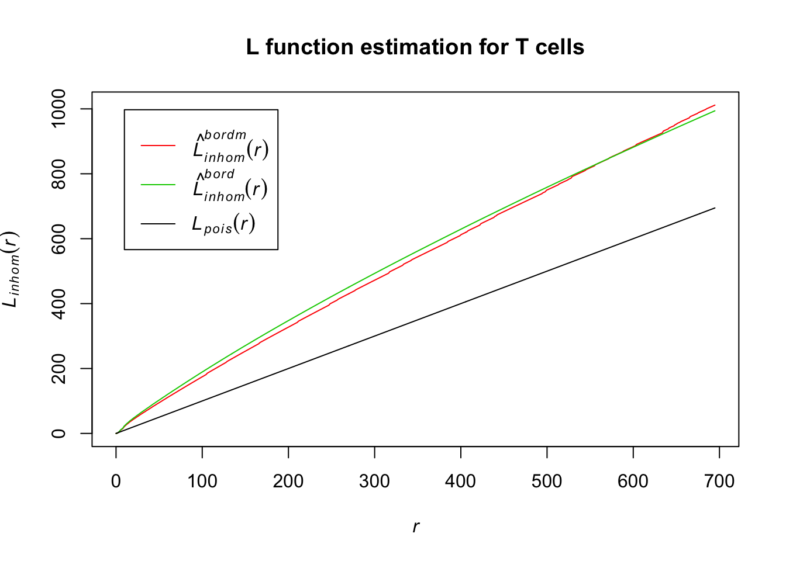
The distance estimator for the border-corrected estimate and modified border-corrected estimate of the L function for T cells differs quite a bit from our homogenous Poisson; this indicates that the distance between T cells in the lymph node is not evenly distributed.
Tumor cells:
# estimating the L function for tumor cells
Lln_Tumor <- Linhom(subset(ln, marks == "Tumor"))## number of data points exceeds 1000 - computing border correction estimate only# visualizing the estimates via plot
plot(Lln_Tumor, col = c(2, 3, 1), lty = 1, main = "L function estimation for Tumor")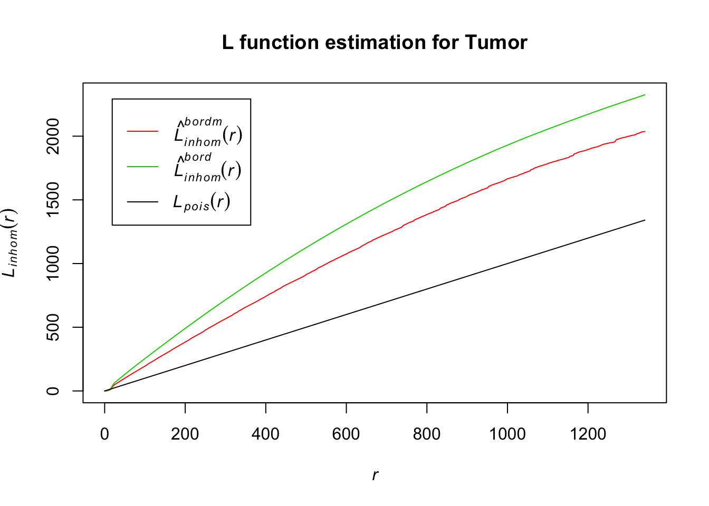
As with the T cells, tumor cells seem to be inhomogenously distributed within the lymph node, based on our L function estimation results.
Dendritic Cells:
# estimating the L function for DCs
Lln_DCs <- Linhom(subset(ln, marks == "DCs"))
# we can see different types of estimation in DCs
# calling the object gives explanations about which estimates were calculated
Lln_DCs## Function value object (class 'fv')
## for the function r -> L[inhom](r)
## ................................................................................
## Math.label
## r r
## theo {L[inhom]^{pois}}(r)
## border {hat(L)[inhom]^{bord}}(r)
## bord.modif {hat(L)[inhom]^{bordm}}(r)
## trans {hat(L)[inhom]^{trans}}(r)
## iso {hat(L)[inhom]^{iso}}(r)
## Description
## r distance argument r
## theo theoretical Poisson L[inhom](r)
## border border-corrected estimate of L[inhom](r)
## bord.modif modified border-corrected estimate of L[inhom](r)
## trans translation-correction estimate of L[inhom](r)
## iso Ripley isotropic correction estimate of L[inhom](r)
## ................................................................................
## Default plot formula: .~.x
## where "." stands for 'iso', 'trans', 'bord.modif', 'border', 'theo'
## Recommended range of argument r: [0, 3359.2]
## Available range of argument r: [0, 3359.2]# visualizing the estimates via plot
plot(Lln_DCs, col = c(2:5, 1), lty = 1, main = "L function estimation for DCs")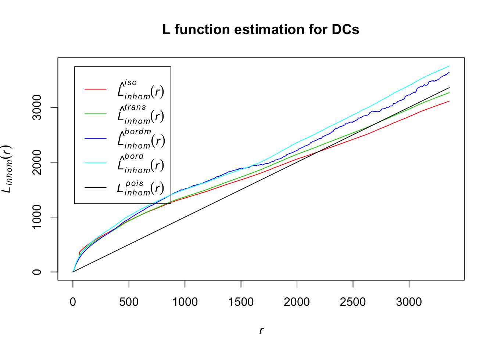
For all of the L function estimates for DCs, their distances estimates seem to differ from the homogenous Poisson, indicating that these are also potentially inhomogenously distributed.
Other cells:
# estimating the L function for other cells (this may take a minute to run)
Lln_Other <- Linhom(subset(ln, marks == "other_cells"))## number of data points exceeds 1000 - computing border correction estimate only# visualizing the estimates via plot
plot(Lln_Other, col = c(2, 3, 1), lty = 1, main = "L function estimation for other cells")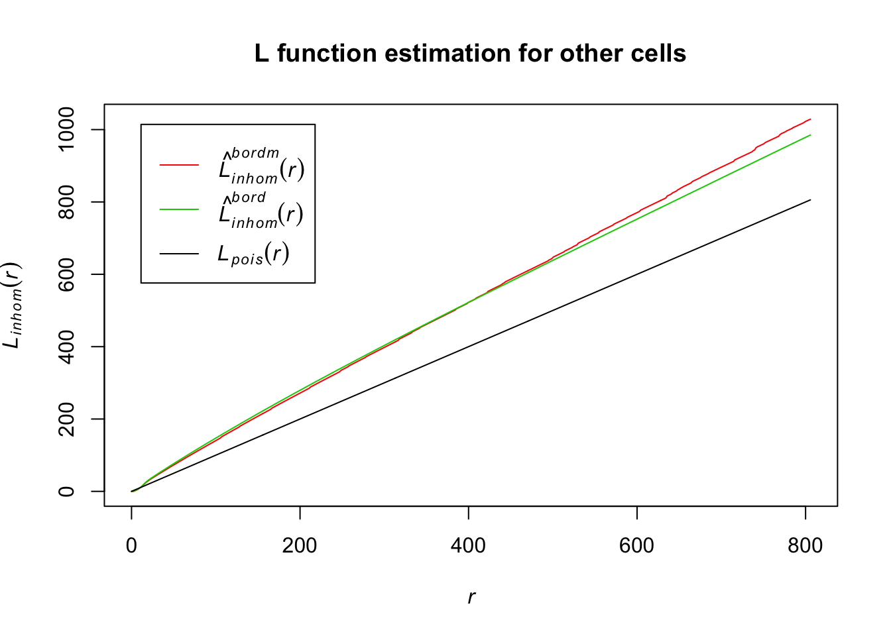
For border correction estimates of the L function for other cells, their distance estimates also differ from the homogenous Poisson. This indicates they are also inhomogenously distributed.
Another way we can analyze our data to see if they are inhomogenously distributed would be to look at the pair correlation function (see equation 11.12) using the pcf and Kinhom functions in the spatstat package. The pair correlation function gives us information about the density of our data points from a reference point. For the homogenous Poisson, the pair correlation function equals 1. Anything less than one suggests inhibition of those points being close, and anything greater than one suggests the points are clustered.
T cells:
# estimating the pcf for T cells (takes a minute to run)
pcf_Tcells <- pcf(Kinhom(subset(ln, marks == "T_cells")))## number of data points exceeds 1000 - computing border correction estimate only# visualizing the estimates by plotting
plot(pcf_Tcells, lty = 1)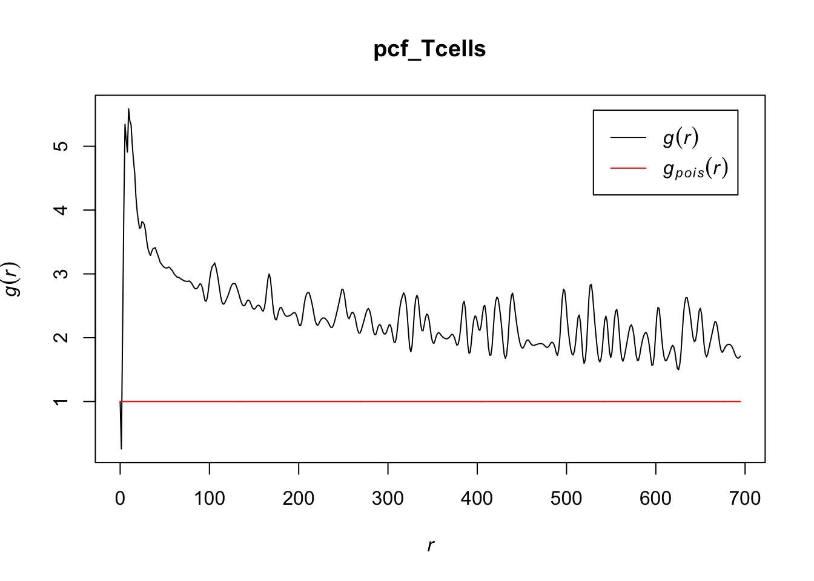
# zooming in to first 10 points
plot(pcf_Tcells, lty = 1, xlim = c(0, 10))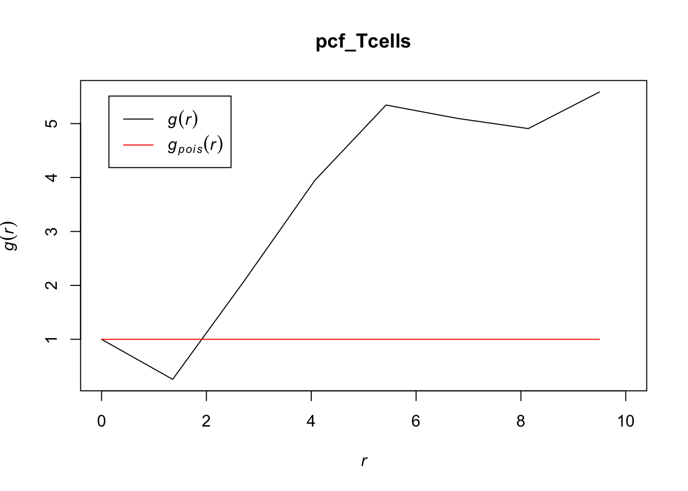
Because the pcf for T cells stays well above 1 for most values of r, T cells appear to cluster together in the lymph node, indicating a distribution that differs from a homogenous Poisson process. For r < 2, it makes sense that there would be some inhibition, as cells take up a certain volume that would inhibit them from being that close together.
Tumor cells:
# estimating the pcf for Tumor
pcf_Tumor <- pcf(Kinhom(subset(ln, marks == "Tumor")))## number of data points exceeds 1000 - computing border correction estimate only# visualizing the estimates by plotting
plot(pcf_Tumor, lty = 1)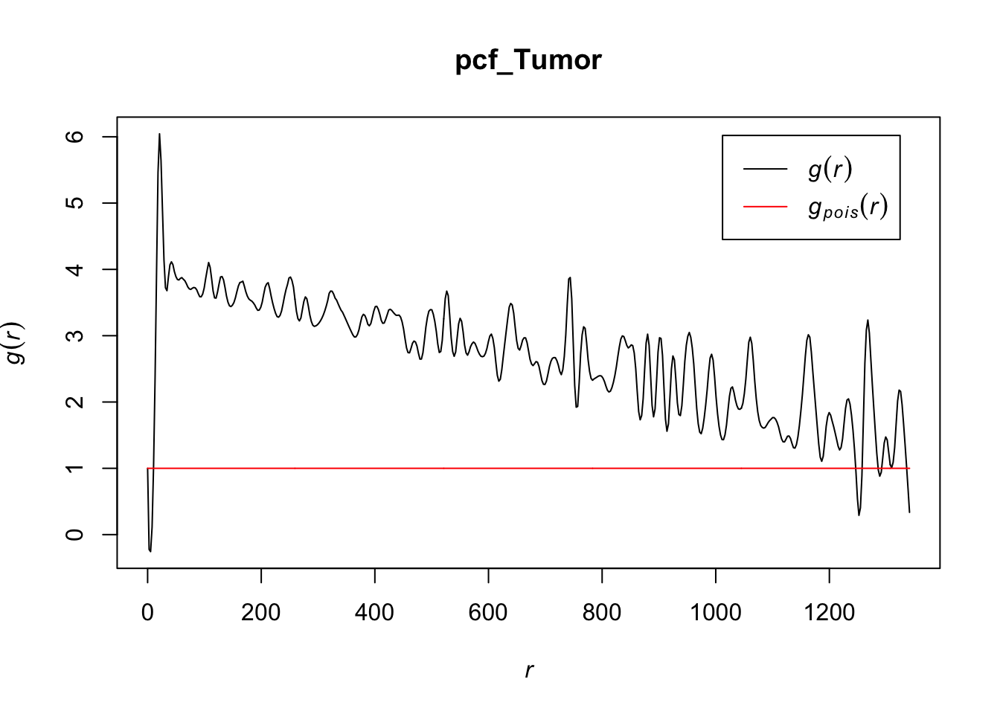
# zooming in to first 20 points
plot(pcf_Tumor, lty = 1, xlim = c(0, 20))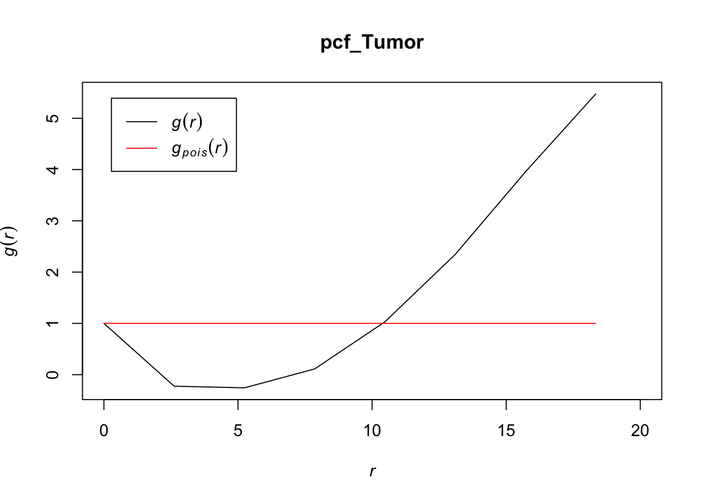
At most values for r, the pcf > 1, indicating that tumor cells also tend to cluster together. Interestingly, the r values for which the pcf < 1 for tumor cells is greater than we saw with T cells, which may indicate that these cells may be larger in volume than T cells (causing their inhhibition from being closer together than a random Poisson process) or that there is something else that would inhibit them from being as dense for those r values compared to T cells.
Dendritic Cells:
# estimating the pcf for DCs
pcf_DCs <- pcf(Kinhom(subset(ln, marks == "DCs")))
# visualizing the estimates by plotting
plot(pcf_DCs, lty = 1)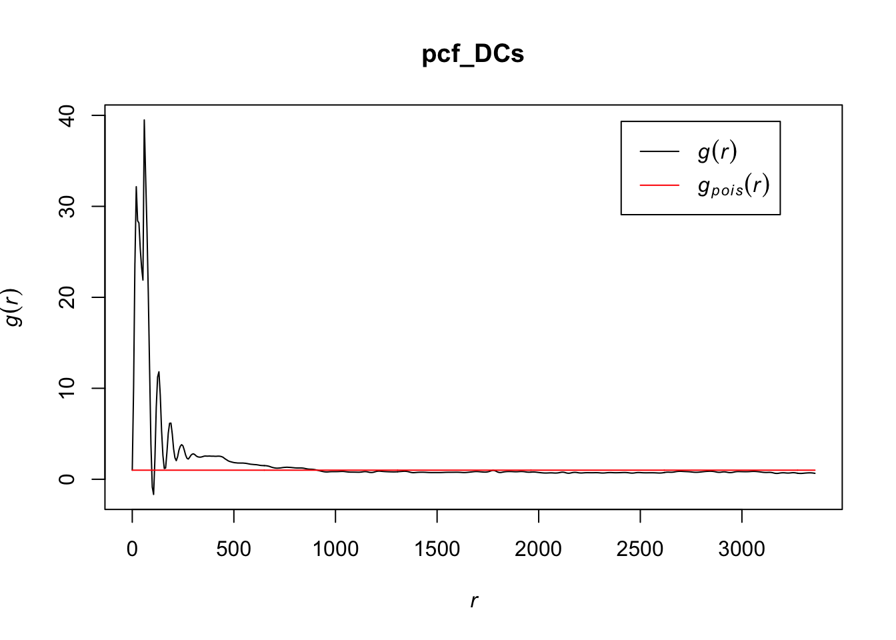
# zooming in to first 1000 points
plot(pcf_DCs, lty = 1, xlim = c(0, 1000))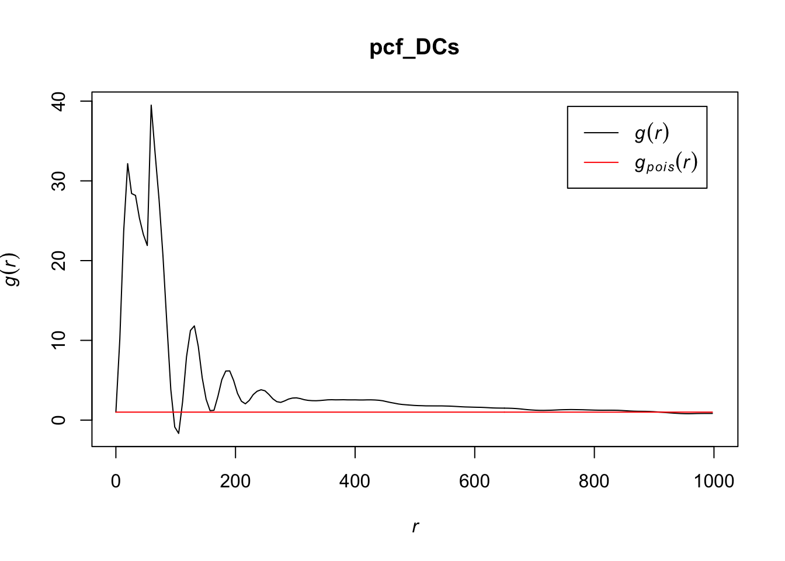
The values for the pcf for DCs are much greater than we saw for T cells or tumor cells, indicating that there is more clustering at certain values of r in this cell type than the others. They do eventually seem to settle close to a homogenous Poisson process after r gets relatively large. It may be worth noting that r has a much greater range for DCs than the other cell types.
Other cells:
# estimating the pcf for other cells (takes a minute to run)
pcf_Other <- pcf(Kinhom(subset(ln, marks == "other_cells")))## number of data points exceeds 1000 - computing border correction estimate only# visualizing the estimates by plotting
plot(pcf_Other, lty = 1)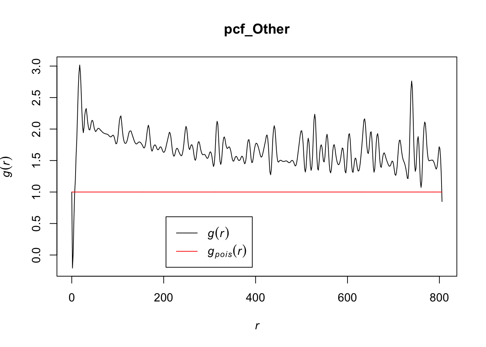
# zooming in to first 10 points
plot(pcf_Other, lty = 1, xlim = c(0, 10))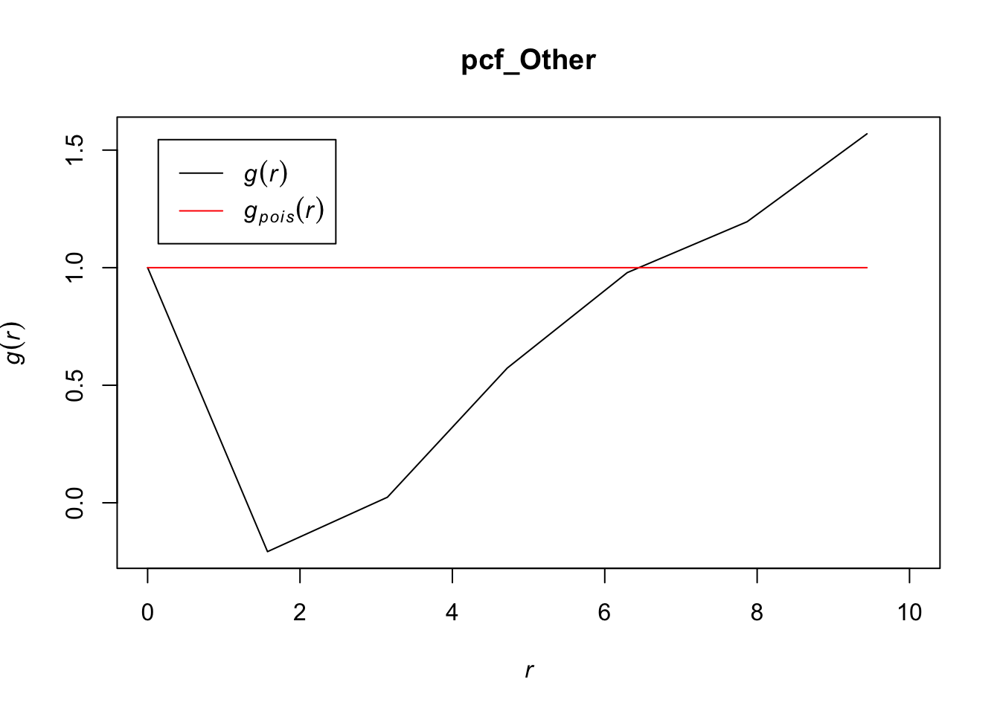
Values for the pcf of ‘other’ cells overall seem to be less than other cell types, indicating that these may be clustering but to a lesser extent than other cell types. The range of values for r in which the pcf < 1 are in between what we saw for T cells and tumor cells, indicating that the ‘other’ cells may have volumes in between that of the T cells and the tumor cells that could explain an inhibition in density at those points. It appears as though other cells are also inhomogenously distributed and do not follow a homogenous Poisson process.
Overall, with all cell types, we saw some levels of spatial dependence based on our L function and pcf analyses. For most distances, or values of r, we saw differences in the distance and density distributions when comparing a homogenous Poisson distribution to the distribution of each cell type. Depending on a specific amount we consider to be significantly different than our null hypothesis, we may reject our null hypothesis that different cell types are homogenously distributed throughout the lymph node.